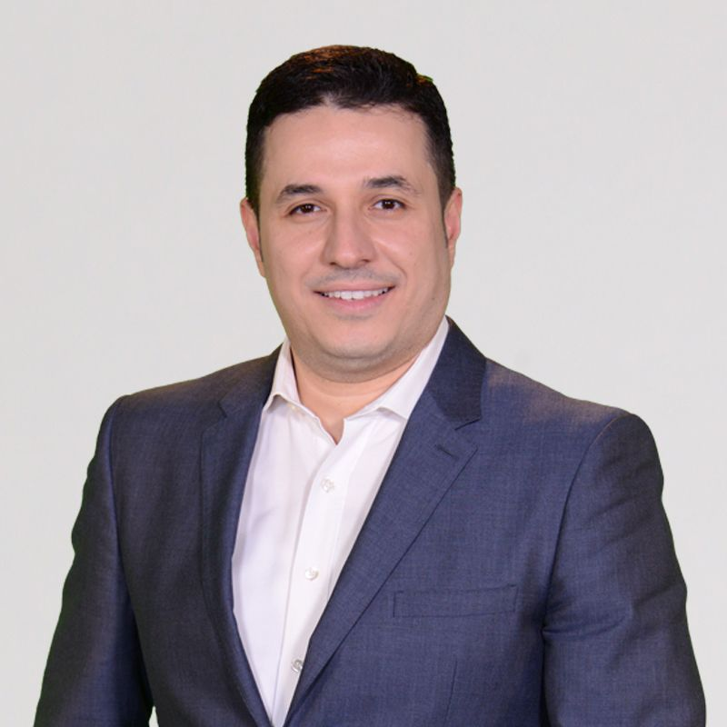

مفكرين إسلاميين
تعلمت منهم الكثير
فَبَشِّرْ عِبَادِ الَّذِينَ يَسْتَمِعُونَ الْقَوْلَ فَيَتَّبِعُونَ أَحْسَنَهُ أُولَٰئِكَ الَّذِينَ هَدَاهُمُ اللَّهُ ۖ وَأُولَٰئِكَ هُمْ أُولُو الْأَلْبَابِ
سورة الزمر - آية 17-18
من مواصفات أولو الألباب الذين هداهم الله عز وجل أنهم يُفَعِّلون ما أعطاهم الله عز وجل لمعرفة الحقيقة، يستمعون أي قول فيتبعون أحسنه مباشرة بدون تردد.
أنا مؤمن بأن إنتمائي لفرقة معينة أو مذهب معين لن يكون شافع لي يوم الحساب إن كنت مخطئ، وكذلك إتباعي لعالم معين لن يكون شافع لي يوم القيامة إن كان مايفتيني به غير صحيح وأنا أتبعته إتباع أعمى, فكل شخص منا محاسب لوحده، لذلك أحب أن أسمع لكل العلماء و المفكرين من جميع المذاهب والطوائف الإسلامية لأعرف وجهة نظره وعلى أي أساس اختار طريقه، وأجد كل فترة شخصاً متميزاً أجلس معه كثيراً أسمع لما يقول، لن أضعهم كلهم في هذه الصفحة ولكن سأختار أميزهم من وجهة نظري بشرط أن يكون:
متعايش مع الأخرين في الغالب
مجتهد وليس مقلد فقط
هؤلاء الذين سأذكرهم هم بشر ليسوا معصومين من الخطأ, وهم مجتهدون لذلك قد يتفقون وقد يختلفون، وأنا لست مؤيد لكل شيء يقولوه.
ليس لي علاقة بإنحيازاتهم الدينية والسياسية والإقتصادية والأمنية ولست داعماً ولا مؤيداً لها بالضرورة.
الدكتور محمد شحرور
لديه منهج فريد في فهم رسالة الله عز وجل لنا كأتباع الرسالة المحمدية. اعتمد على كتاب الله عز وجل كمصدر أساسي لفهم الإسلام ولمدة تزيد عن 50 سنة من حياته قضاها في البحث لم يحتاج إلى أي مصدر آخر لفهم رسالة الله لنا غير مافي المصحف. محمد شحرور ليس منكر للأحاديث النبوية ولكن لديه طريقة مختلفة بينها في كتابه “السنة الرسولية والسنة النبوية”. ألف العديد من الكتب وفي كل كتاب جديد يذكر ما ظهر له مخالف لما ذكره في كتب سابقة له.
الدكتور محمد شحرور لا يتبع لأي مذهب ولكن كونه نشئ في أسرة سنية فإذا أستشهد بالحديث سيستشهد بالأحاديث المعترف بها لدى المذهب السني
أ.د. سعد الدين الهلالي
أستاذ دكتور في الفقه المقارن في جامعة الأزهر. سني المذهب. يدعو إلى أن تُطرح جميع الأراء الفقهية للناس ولا يُخفى عنهم شيئاً والناس هم الذين لهم القرار في اختيار الرأي المناسب لهم. وأن لا يُمارس على الناس أي تسلط فقهي أو تجهيل ممنهج. لديه برامج تلفزيونية كثيرة منشورة على اليوتيوب. مشاهدتها ستؤدي إلى زيادة الثقافة والوعي بجميع الآراء الفقهية في المسائل التي تمس حياة الناس اليومية.
تويتر · فيسبوك · البريد الإلكتروني · يوتيوب
السيد حسن السقاف
سني المذهب من أهل السنة والجماعة. ينتقد كثيراً مما هو متعارف عليه بأنه مما أجمعت عليه الأمة. السماع له يجعل الشخص أكثر علماً وفهماً للأمور المختلف فيها ويتعرف على أدلة المخالفين و يكون أكثر إعتدالاً.
علماً بأني تعرفت عليه من أحد قراء هذه الصفحة عبر النموذج بالأسفل.

حسن بن فرحان المالكي
سني المذهب باحث في الأحاديث النبوية السنية لسنوات طويلة ألف خلالها العديد من الكتب وأنتج الكثير من الأبحاث القائمة على الأحاديث. أُتهم من قبل معارضيه بأنه تشيع لأنه تبين له من خلال أبحاثه أن الفجوة بين المذهبين ليست شاسعة إذا ما تم البحث من قبل الجانبين بشكل يراد به معرفة الحقيقة وليس الانتصار للمذهب. كما يدعو لفهم الأحاديث بفهم المصطلحات القرآنية كما بينها الله عز وجل في كتابه وليس كما هو متعارف عليه في المذهب.
تويتر · فيسبوك · يوتيوب · لينكدإن · الموقع الإلكتروني
السيد كمال الحيدري
شيعي المذهب و مطلع وبشكل كبير على المذهب السني. ينتقد وبشدة الكثير من الأمور في المذهب الشيعي ولذلك يُهاجم وبشدة من قبل الكثير من علماء المذهب الشيعي. يدعو وبشدة للتحول من إسلام الحديث الى إسلام القرآن ولا يعني ذلك إنكاره للحديث ولكن يريد أن يكون أساس أي شيء في الإسلام هو القرآن وليس الحديث.
تويتر · فيسبوك · يوتيوب · إنستغرام · الموقع الإلكتروني
د. محمد هداية
بخلفيته السنيه و أبحاثه الكثيرة ودراساته المتعددة يعرض الدكتور محمد هداية مفاهيم جديدة لكثير من المفاهيم الدينية التي اعتاد المسلمون عليها. هو منكر لأغلب الأحاديث النبوية ويأخذ بالقرآن الكريم و التواتر الذي نقل عن النبي صلى الله عليه وسلم.
الشيخ أحمد الخليلي
إباضي المذهب و مفتي سلطنة عمان. المذهب الإباضي مذهب ليس له أتباع كثر وتدور حوله الشكوك فخير من تعرف منه المذهب الإباضي هو مفتي الإباضية اليوم في هذا العالم.
الشيخ أ.د. الشريف حاتم العوني
سني المذهب و بروفيسور في علم الحديث من الجانب السني. بحكم تخصصه في علم الحديث تستطيع أن تفهم منه كيف يعمل المتخصصين في علم الحديث وكيف يفهمون الدين.
تويتر · فيسبوك · يوتيوب · إنستغرام · الموقع الإلكتروني
أحمد سعد زايد
قارئ نهم ومفكر ومحاور في كل نواحي الحياة تقريباً لديه صالون ثقافي في بلده مصر ويسجل أغلب جلسات الصالون الثقافي وينشره في قناته في اليوتيوب. ليس لديه حدود في التفكير وطرح الأسئلة.

د. أحمد عمارة
دكتوراه في علم النفس ولكن ما يميزه أنه يربط علم النفس بأوامر الله عز وجل بفهم جديد. يصدر من هذا الخليط نتاج جديد غير مسبوق. لديه الكثير من الفيديوهات المجانية على اليوتيوب ودورات مدفوعه على موقع أكاديمية عمارة.

تويتر · فيسبوك · يوتيوب · إنستغرام · البريد الإلكتروني · الموقع الإلكتروني
د. عدنان ابراهيم
سني المذهب ويتميز بموسوعيته وعلمه في شتى المجالات خطيب قوي جداً وكثير جداً من خطبه موجودة على قناته على اليوتيوب. خطبه تكسر الجمود و تجعلك تعيد التفكير في بعض الأمور التي تعتبر من المسلمات لدى الكثير.

أميل لمشاهدة خطب د.عدنان ابراهيم أكثر من برامجه على القنوات التلفزونيه. و حقيقة لا أميل للسماع له مؤخراً ولكن إستفدت منه كثيراً لكسر الجمود الفكري.
تويتر · فيسبوك · يوتيوب · إنستغرام · البريد الإلكتروني · الموقع الإلكتروني